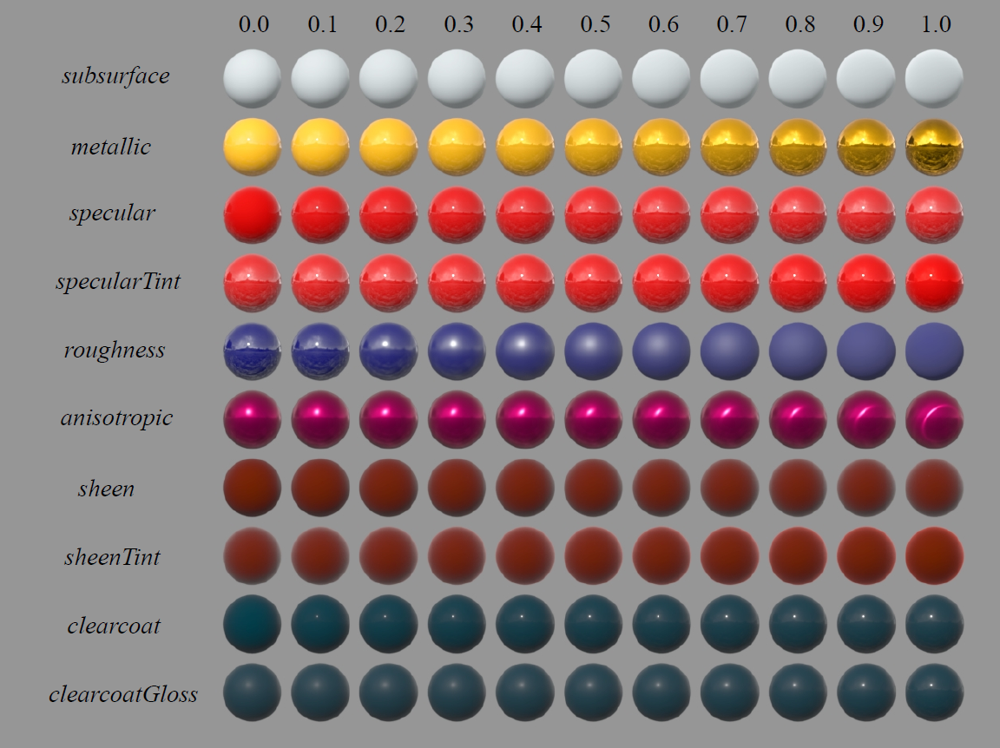
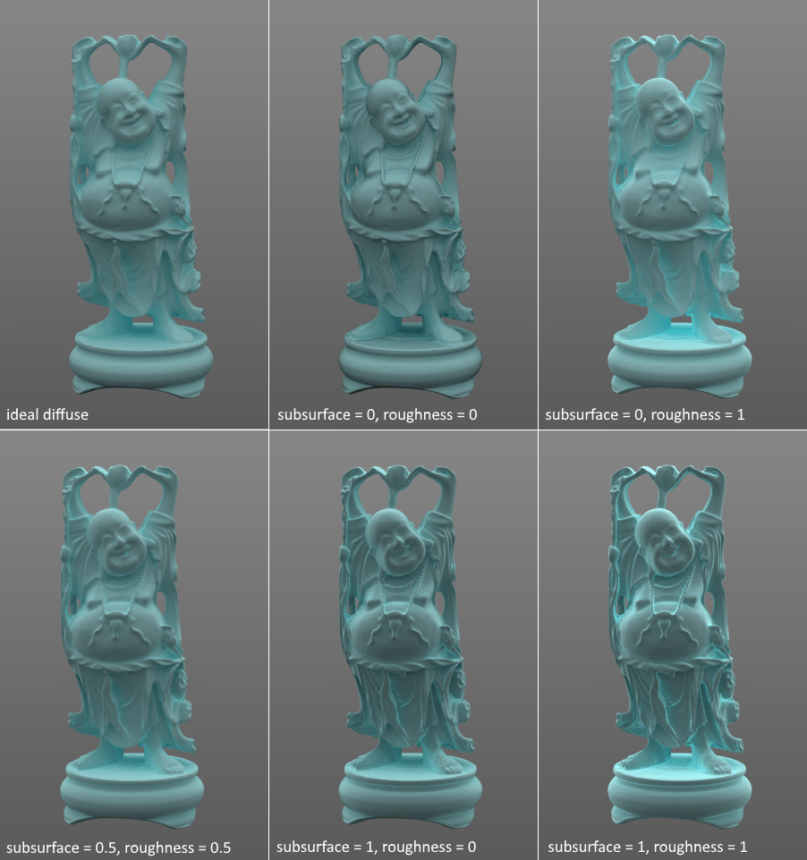
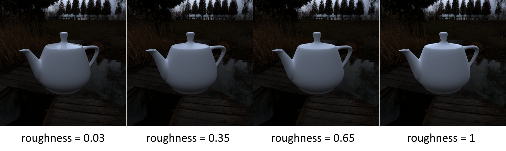

Physically Based Rendering（PBR）是个很美好的概念，意为在物理意义上有据可依的渲染技术。PBR在物体材质上的应用主要立足于各种反射/折射模型上，然而，诸如微表面法线分布函数、导体的复数折射率等花里胡哨的公式和概念对使用者极不友好。Disney Principled BRDF（以后简称Disney BRDF）为PBR材质提供一组直观的参数和编辑方式，在“直观”、“多样”和“基于物理”三者间取得了很好的均衡。我寒假在家无事，决定实现一下看看效果。
本文记叙了我在实现Disney BRDF过程中的推导和所使用的公式，而不是解释一些PBR相关的基础知识。大部分内容以Disney BRDF Shader和Disney Principled BRDF文档为参考。
初入图形学，如有错误，欢迎指正。
参数概览

如上图所示，Disney BRDF有11项用于调节材质外观的参数，它们分别是：
- baseColor，材质的基本颜色，通常设定为常数或由纹理提供。
- subsurface，用于控制材质的漫反射成分向次表面散射靠拢的程度。
- metallic，金属度，指材质的外观向金属靠拢的程度。
- specular，高光度，控制材质中非金属部分的高光明亮程度。
- specularTint，高光颜色向基本颜色靠拢的程度。
- roughness，材质粗糙程度。
- anisotropic，各向异性度，即材质反射的非对称程度。
- sheen，模拟一些纺织物边缘的明亮效果。
- sheenTint，sheen分量的颜色向基本颜色靠拢的程度。
- clearcoat，一个额外的高光项，用于模拟清漆的效果。
- clearcoatGloss，清漆的光滑程度。
以上所有参数的有效取值范围均为[0, 1]，该范围内的任何取值组合都被认为是合法的（valid）材质。下面依次解析Disney BRDF的各分量模型以及上述参数在其中起到的作用。
漫反射
漫反射是光进入材质表面以下发生浅层散射后再从离入射点非常近的位置射出的结果，在物理意义上和次表面散射是相同的（只是尺度不同）。正因如此，许多材质模型会用fresnel公式计算折射光比例作为漫反射分量的乘积因子。
Disney BRDF使用了魔改的Schlick公式——他们丢弃了折射率的概念，转而让fresnel项和物体表面的粗糙度挂钩。我没看出这有什么道理，不过原文称“这能很好地拟合实际数据，对artists也很友好”，那就暂且接受吧。公式如下：
其中是入射方向与half vector 的夹角。
既然漫反射和次表面散射具有类似的原理，那么就可以用一个参数来在二者之间过渡，也就是Disney BRDF中的subsurface参数。Disney BRDF会计算出一个漫反射值和一个次表面散射值，然后用subsurface在二者间进行插值。
对于次表面散射的计算，Disney BRDF并未使用人们所熟知的Jensen BSSRDF等复杂模型（否则计算效率也太低了），而是用一个BRDF来近似计算。他们的次表面散射公式是从Hanrahan-Krueger BRDF改进而来的：
高光
如今几乎所有的PBR材质模型中的高光都是用Torrance-Sparrow微表面模型来模拟的，其形式如下：
其中是fresnel项；是微表面法线分布函数值，为与法线的夹角，为的水平极角；为法线为的微表面中没有被其他微表面遮蔽的比例。和在不同的材质模型中有不同的选择，下方的则是Torrance-Sparrow模型固有的一部分。Torrance-Sparrow模型的来历可简单参见这里（该公式框架最早来自此文，Cook-Torrance改变了其中的归一化常数，给出的式子在图形学中更加常用）。
微表面法线分布
Disney BRDF中的高光项也使用了该模型，其微表面法线分布函数具有如下形式：
其中是归一化常数；和是衡量表面粗糙度的参数，它们相等时材料为各向同性，不等时则为各向异性；是一个用来调整函数曲线的参数，为2时就恰好等价于近来流行的GGX（Trowbridge-Reitz）函数。由于这一函数在Trowbridge-Reitz的基础上添加了参数，因此被称为Generalized-Trowbridge-Reitz函数，简称GTR。Disney BRDF中有两处使用了GTR函数，一处是这里的高光项，另一处是清漆的反射。在高光项中，值恰好被设定为2。、与Disney BRDF参数间的关系为：
考虑到应满足归一化约束：
取，稍微积个分：
解得，即：
这公式写着太费劲了，不妨设：
于是：
如果要在离线渲染中使用这一分布函数，我们还需要对BRDF进行重要性采样。具体到这里，我们选择按设计采样所用的概率密度函数。令，那么：
两边在上对积分，得：
自然而然地：
有了概率密度函数和，对其积分就能得到分布函数和。首先是：
设是上的服从均匀分布的随机变量，令，解得：
这个式子有些问题：里面的对或是无意义的，外面的的取值范围又是而不是我们想要的，如下图所示：

可以看到这一函数被分为三段，我们把中间的一段向上平移，最后一段向上平移，并专门处理和附近的值以保持函数曲线平滑、避免出现数值问题即可。事实上，我们并不直接需要的值，只要求出和即可，这样就能绕开和的糟糕性质——
其中是保证的归一化系数。
最后是求对应的条件分布：
令，解得：
最后推导一下按这种方式采样，然后依据它计算出入射方向的概率密度。注意到：
又根据，有：
我在对高光进行采样的时候没有考虑fresnel项和遮蔽项，主要原因是考虑了之后我就推不出来了，emmmm……
遮蔽项
接下来是Torrance-Sparrow公式中的，Disney BRDF选择了Smith遮蔽函数：
至于，就直接用各向异性GGX分布对应的遮蔽函数好了：
其中的和还是按之前的方法通过roughness和anisotropic计算出来的。值得一提的是，最初的Disney BRDF在计算高光的遮蔽项时将roughness做了如下变换：
并称这样能够更好地拟合MERL数据库中的材质数据。后来随着理论分析的进步，他们认为MERL中对光滑材料的数据测量并不准确，去掉了这一trick。
边缘处的光泽
当我们从几乎垂直于法线的方向去观察诸如丝绸或一些布料时，它们会显得比普通的漫反射更明亮一些。Disney BRDF直接用一个缩放后的Schlick公式去模拟这一现象，即。
清漆
诸如车漆、木质地板等材料可以通过一个两层模型来渲染：上面是一层透明材料，通常比较光滑，下面则是漫反射或金属等其他材料。如果要仔细地渲染这一模型，我们需要考虑两层间的多次反射和折射，并用fresnel公式来分配每次反射/折射的比例。Disney BRDF采用的方案要简单粗暴得多——加上一个额外的高光，称为清漆（clearcoat）项。
清漆项同样采用Torrance-Sparrow模型，其遮蔽项是取粗糙度为定值0.25的GGX遮蔽项，fresnel项固定取折射率为1.5的绝缘体，微表面法线分布函数则是取的各向同性GTR函数（记作GTR1），其中1 - clearcoatGloss被映射到范围内作为粗糙度。下面稍微推一下GTR1的归一化系数和采样方法。
GTR1函数
GTR1具有如下形式：
其中是归一化系数。利用归一化约束：
解得，于是：
接下来是重要性采样。由于GTR1对而言是各向同性的，我们可以直接取，并且和相互独立，于是可以求出：
积分之：
令，解得：
BRDF
上面说了这么多“项”，我们还需要将它们融合起来变成一个BRDF。能量守恒这种高端要求是不指望了（像Smith G这种函数本身就会带来能量损失），但至少看起来不能太离谱。设：
并设入射方向为，出射方向为，half vector 为，与的夹角为，则Disney BRDF为：
其中为漫反射：
为次表面散射项：
为sheen项：
是求相对亮度的函数，对线性颜色空间中的RGB值，有：
是高光的frensel项，用Schlick公式做了近似。对绝缘体而言，Schlick公式中的可以用一个实数表示；而对金属而言，是带有颜色信息的，因此Disney BRDF利用金属度参数在两种情况间进行了插值：
是高光的遮蔽项，采用各向异性GGX对应的Smith函数：
是高光的微表面法线分布函数，采用各向异性GTR2函数（其实就是GGX）：
是清漆的fresnel项，采用折射率固定为1.5的绝缘体对应的Schlick公式：
是清漆的遮蔽项，采用粗糙度为0.25的各向同性GGX对应的Smith函数：
居然没和挂钩，官方解释是这样效果看起来很好，太真实了……
是清漆的微表面法线分布，采用各向同性的GTR1函数：
至此，Disney BRDF的计算就介绍完毕，可以在Shader中实现了。
实现效果
我依次实现了Disney BRDF中的各个部分，最终将它们组合起来。第一步是漫反射：

接下来是高光：

这里有两个和直觉相悖的现象：
- 粗糙度越大，物体表面显得越暗。
- 粗糙度较大时，物体边缘显得比中间更暗。
对此我尝试在自己的知识范围内作出解释。第一个现象的原因应该是随着粗糙程度的增加，Smith遮蔽函数的值会越来越小；此时微表面间的间接反射也会增加，Torrance-Sparrow模型忽略了这部分反射，从而导致物体显得暗淡。至于第二个现象，fresnel现象会增加金属物体边缘的亮度，但这里的参数恰好将fresnel现象的影响降得极低；而当光从几乎垂直于物体表面法线的方向入射时，部分反射光方向是朝向表面下方的，这部分也应该作为被微表面间的间接反射进行处理的光没有被模型纳入考虑，也就造成了金属物体边缘的暗淡。
最后是清漆，它是另一个弱一些的高光项，就不放图了。清漆的强度参数取值范围是，实际使用时被映射到了，我在使用时一直觉得很难看出来，这可能是由于我所使用的环境光中的高频能量不够，使得清漆的高光效果不明显。
在将各部分结合起来时，需要对各部分进行重要性采样。我们以的概率采样漫反射；若未采样漫反射，又以的条件概率采样高光，并以最后剩下的概率采样清漆。至于sheen项，它的能量占比太小，就忽略好了。在最终计算概率密度函数值时，设漫反射、高光和清漆对应的pdf分别为，则根据全概率公式：
这里显然是可以改进的，不过我已经等不及要看看效果了，就先这样吧。实现过程完全是抄公式，没什么好说的。现在来展示一下。首先我们把metallic和specular设为0，分别取roughness为0.1, 0.35, 0.65和1，来画一只茶壶：

然后再把roughness固定为0.25，调整metallic来观察茶壶外观的变化：

也可以加上法线贴图、通过纹理来指定物体表面各点的Disney BRDF参数，不过这个茶壶模型没有纹理坐标，所以就到这里吧。最后放个东西多一点的场景（茶壶材质来自这篇paper）：

这颜色……我的审美没救了。
以上渲染使用的佛像来自Stanford 3D Scanning Repository，人像和螃蟹来自3D Scans，茶壶来自Benedikt Bitterli，环境光来自HDRI Heaven。代码可以在我的github上找到，水平比较渣，见笑了。
NEXT STEP
Disney BRDF的一个显著缺点是无法处理透明和半透明的材质，这在之后的扩展版——Disney Principled BSDF中得到了解决。BSDF版本不仅引入了透射，还支持了介质吸收和Normalized Diffusion BSSRDF，这需要渲染算法加以支持。不出意外的话，我以后会有一篇关于它的实现笔记。